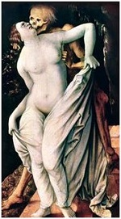

- 1. The Borgia Bull
- Spared the seemingly inevitible war with France, the pope splashes out on a lavish celebration and no expense is spared. A huge wicker bull is constructed to be burnt as part of the festivities. An artist catches the popes eye.
- 2.Paolov
- Paolov the stable boy has followed Lucrezia to Rome to try to get to see his son. He doesn't count on the ruthlessness of her brother Juan. When Paolo is found hanging with a suicide note Lucrezia knows he was murdered as the lad did not know how to write.
- 3. The Beautiful Deception
- Lucrezia knows her lover was murdered and suspects juan was involved. She causes such headaches for her father that Juan is sent off to Spain to be married. The enemies of the family side with the French as he moves his army to lay siege to Rome.
- 4. Stray Dogs
- A cunning plan is concocted by the popes latest lover to decieve the French. Lacking the means to obtain real cannon for the defence of the city, Fake cannon are made from plaster to line the battlements. Luckily the ruse works, and the french retreat with their tails between there legs.
- 5. The Choice
- Now that the French have been dealt with, the can turn his attention to those who chose to side against him. Foremost of these are the Sforza's. Cesare is sent to Forli to deliver an ultimatum of submission. Instead he ends up being seduced by Catherine and must return to his father empty handed.

- 6. Day of Ashes
- Della Rovere recruits a zealous young monk to become his assasin, and starts his training. Cesare asks his father to release him from his vows so that he can become a soldier as he has allways wanted. Rodrigo however has other plans for his eldest.
- 7. The Siege at Forli
- Juan returns from Spain bearing gifts from the New World for his father. He is chosen to lead the papal armies and lay siege to Forli Castle and bring the Sforza's to heel. Cesare resents this and the sibling rivalry crackles in the air.
- 8. Truth and Lies
- Suffering defeat Juan returns to his father with tales of treachery and even bigger lies about his heroic stand alongside his fellow soldiers. The truth however soon starts to emerge, with the amusing anecdote of how Catherine Sforza Laughed at him from the battlements of her Fortress.
- 9. World of Wonders
- Burning heretics!. Brother Savanorola a long time thorn in the side of the Borgias is becoming too powerfull and must be dealt with.A mad dog who cannot be brought to heel. Foolishly he agrees to prove his claims under trial by fire. Meanwhile Lucrezia finds love once more.
- 10. The Confession
- A downward spiral grips the family. Juan turns up dead in the city sewers. A fitting end some would think. The pope is grief stricken, luckily he does not know the whole truth of the matter. Seizing the moment, Cardinal Della Rovere's assasin strikes.... will the pope live or die ? That's for season three to reveal.